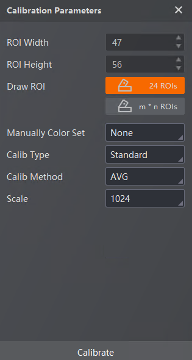

The White Balance module supports correcting the color cast of images, and making colors of images similar to what human eyes observe.
Correct the image after calibration, or click Correct to skip the calibration and set the correction parameters.
Click 24 ROI, draw the ROI on the picture, and set ROI Width and ROI Height to adjust the ROI.
Set more parameters:
Disable the color set.
Click Original Color and select a file in TXT format to import. Or click Add Row to add more original colors.
For the file in TXT format, you should enter a color in a row in RGB format, and no empty row is allowed.
Click Delete Row to delete the needed row.
Select from AVG and SOLVE.
For easier calculation, set the scale to change the corresponding integer RBG in the Matrix.

Figure 1 Calibration Parameters of White Balance